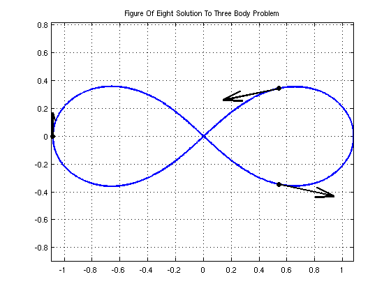
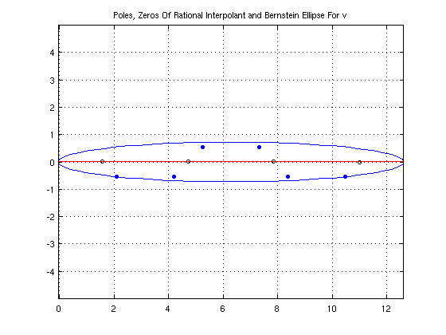
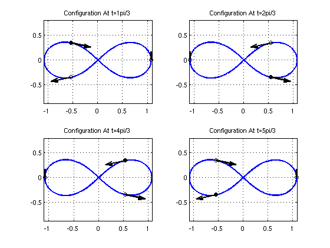
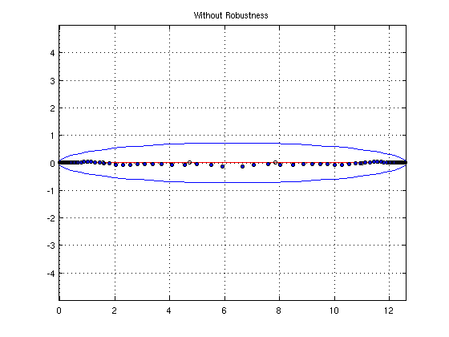

Computing The Complex Singularities Of The Three Body Problem
Marcus Webb, 23rd August 2011
Contents
(Chebfun example ode/ThreeBodyProblem.m)
This example is motivated by a correspondence with Divakar Viswanath, University of Michigan.
Introduction
The three body problem is a system of ODEs modelling three particles of prescribed masses m1,m2,m3 under mutual gravitation in two or three dimensions. We will consider the two dimensional case, so that we can use complex arithmetic to solve it in Chebfun.
u'' = m2*(v-u)/abs(v-u)^3 + m3*(w-u)/abs(w-u)^3,
v'' = m1*(u-v)/abs(u-v)^3 + m3*(w-v)/abs(w-v)^3,
w'' = m1*(u-w)/abs(u-w)^3 + m2*(v-w)/abs(v-w)^3.
Subject to initial conditions.
Figure Of Eight Solution
In 2000 Chenciner and Montgomery [3] presented a paper showing the existence of "A remarkable periodic solution of the three-body problem in the case of equal masses". The solution had been found independently by Moore in 1993, but this did not include an existence proof. The particles travel around a figure of eight shape (shown below).
Here we use modified versions of the intial conditions given in the paper.
dom = domain([0,4*pi]); a = 6.32591398/(2*pi); % scaling factor to give period 2pi opts = odeset('abstol',1e-13,'reltol',1e-13); fun = @(t,u) a*[u(4);u(5);u(6);... ((u(2)-u(1))./abs(u(2)-u(1)).^3+(u(3)-u(1))./abs(u(3)-u(1)).^3);... ((u(1)-u(2))./abs(u(1)-u(2)).^3+(u(3)-u(2))./abs(u(3)-u(2)).^3);... ((u(1)-u(3))./abs(u(1)-u(3)).^3+(u(2)-u(3))./abs(u(2)-u(3)).^3)]; u = ode113(fun, dom,[0.540508553669932 + 0.345263318559681i,... 0.540508532338285 - 0.345263317862853i,... -1.081017086008497 - 0.000000000697245i,... -1.097122372968180 - 0.233604741427372i,... 1.097122377013713 - 0.233604786311327i, ... -0.000000004046108 + 0.467209527738458i],... opts); plot(u(:,1),'linewidth',2); title('Figure Of Eight Solution To Three Body Problem'); axis equal; grid on; hold on; plot(u(0,1:3), 'ok', 'MarkerFaceColor','k','MarkerSize',7); quiver(real([u(0,1),u(0,2),u(0,3)]),imag([u(0,1),u(0,2),u(0,3)]),... real([u(0,4),u(0,5),u(0,6)]),imag([u(0,4),u(0,5),u(0,6)]),... 0.4, 'k','linewidth',2); hold off;
Such types of solution to the n-body problem, where the particles follow periodic paths, have since been called choreographies.
Computing The Complex Singularities
Let us consider the chebfun representing the third particle, whose initial value appears on the left in the above plot. This is a complex valued chebfun with domain [0, 4pi], (2 periods).
v = u(:,3)
v =
chebfun column (1 smooth piece)
interval length endpoint values
[ 0, 13] 314 complex values
vertical scale = 1.1
We can compute a rational interpolant for v using the robust rational interpolation and least squares algorithm described in [2], which is implemented by Chebfun in the function RATINTERP. Then we can consider this rational interpolant as an analytic continuation of the underlying function and analyse its singularities.
We are considering this function in complex time! An abstract concept which can inform us of properties of the solution in real time. For example, if there is a complex singularity t_0 near to the real line, the function is somewhat less smooth at time t = real(t_0)) than it is elsewhere.
The above output shows that the degree of v is 313. In general, a good choice for the degrees of the numerator and denominator for a rational interpolant of a polynomial with robustness is about half the degree, so we shall use a [157,156] rational interpolant. We don't expect there to be 156 singularities - RATINTERP will remove extra poles of small residue. For the robustness part, we use a tolerance of 1e-12.
The default tolerance is 1e-14, but the system was solved above to a tolerance of 1e-13 and will have noise of this magnitude, which the robustness procedure will ignore if the tolerance is set to around 1e-12.
[p,q,rh,mu,nu,poles] = ratinterp(v,157,156, [], [], 1e-12); mu nu
mu =
154
nu =
6
We can see, the robustness of the algorithm reduces the degree of the rational interpolant to [mu,nu] = [154,6] in this case. We still have a good error estimate on the real interval:
max(abs(rh(linspace(0,4*pi,100)) - v(linspace(0,4*pi,100))))
ans =
4.667630919002994e-10
Analysis Of Singularities
The poles calculated above are,
poles
poles = 2.099140846662788 - 0.539427239344758i 4.188055639097263 - 0.547473689753904i 5.234456143522086 + 0.551846552490535i 7.331914639109056 + 0.551846760382893i 8.378315088897597 - 0.547473603587052i 10.467228545819809 - 0.539427611606063i
A straightforward analysis considering the symmetries of the system (communicated to me by Viswanath) shows that if the solution that v is approximating has any complex singularities, the real part may only take the values pi/3*[1,2,4,5] (mod 2pi).
real(poles)*3/pi
ans = 2.004531851954934 3.999298541437297 4.998537417835677 7.001462742852217 8.000701567076790 9.995466981238886
We have found poles with real parts approximately pi/3*[2,4,5,7,8,10], which agrees with the analysis. We do appear to have missed one singularity at pi/3 and 11pi/3, but it is typical to expect only the singularities near the centre of the interval to be found.
Let us plot the poles with blue dots and the zeros as black circles. The real interval [0,4pi] is coloured red.
plot([0,4*pi]+eps*1i,'-r'); hold on plot(roots(q,'all'),'o','markersize',4,'color','b','markerfacecolor','b'); plot(roots(p,'complex'), 'ok', 'markersize',5); axis equal; grid on; chebellipseplot(v); title('Poles, Zeros Of Rational Interpolant and Bernstein Ellipse For v'); hold off;
chebellipseplot(v) plots the Bernstein ellipse associated with v. This ellipse is an estimate, based on the decay of the Chebyshev coefficients of v, of the largest ellipse with foci -1 and 1 in which the underlying function approximated by v is analytic. The poles appear around the edge of this ellipse, which explains why we missed those poles at the edges of the interval - those zeros are too far out from the ellipse.
Let us plot the configuration of the particles at time t = pi/3*[1,2,4,5], the real parts of the poles of our solution. The black particle is particle 3, which has a complex singularity just off the real line at these times.
c = [1,2,4,5]; t = pi/3*c; for j = 1:4 subplot(2,2,j); plot(v,'linewidth',2); axis equal; grid on; hold on; plot(u(t(j),1:2), 'ok','MarkerSize',7); plot(u(t(j),3), 'ok', 'MarkerFaceColor','k','MarkerSize',7); quiver(real([u(t(j),1),u(t(j),2),u(t(j),3)]),... imag([u(t(j),1),u(t(j),2),u(t(j),3)]),... real([u(t(j),4),u(t(j),5),u(t(j),6)]),... imag([u(t(j),4),u(t(j),5),u(t(j),6)]),... 0.4, 'k','linewidth',2); title(sprintf('Configuration At t=%dpi/3', c(j))); hold off; end
Without Robustness
Now let us do exactly the same with robustness switched off (tol=0):
[p,q,rh,mu,nu,poles,res] = ratinterp(v,157,156, [], [], 0); clf; plot([0,4*pi]+eps*1i,'-r'); hold on plot(roots(q,'complex'),'o','markersize',4,'color','b','markerfacecolor','b'); plot(roots(p,'complex'), 'ok', 'markersize',5); axis equal; grid on; chebellipseplot(v); title('Without Robustness');
This is a demonstration of the phenomenon of spurious poles or "Froissart doublets" - each pole is paired (almost) with a zero in the numerator. Robust RATINTERP removes such poles with an implementation based on the singular value decomposition.
References
[1] Private communication with Divakar Viswanath, July 2011
[2] A. Chenciner and R. Montgomery. A remarkable periodic solution of the three-body problem in the case of equal masses. Annals of Mathematics- Second Series, 152(3):881–902, 2000.
[3] P. Gonnet, R. Pachón, and L.N. Trefethen. Robust rational interpolation and least-squares. Electronic Transactions on Numerical Analysis, 38:146–167, 2011.
[4] Nick Trefethen. Rational Interpolation, Robust and Non-Robust http://www2.maths.ox.ac.uk/chebfun/examples/approx/html/RationalInterp.shtml
[5] Wikipedia article: 'http://en.wikipedia.org/wiki/Three_body_problem'